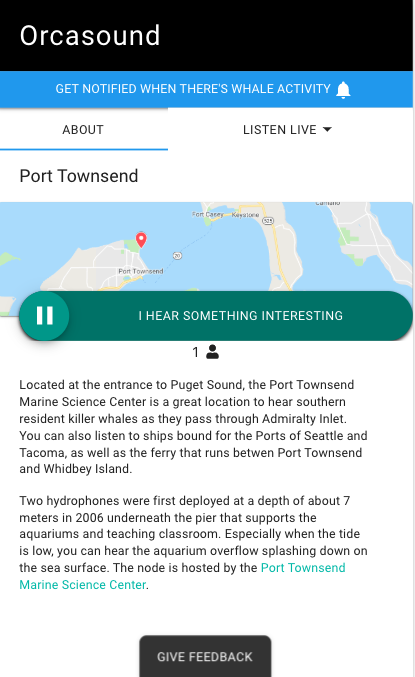
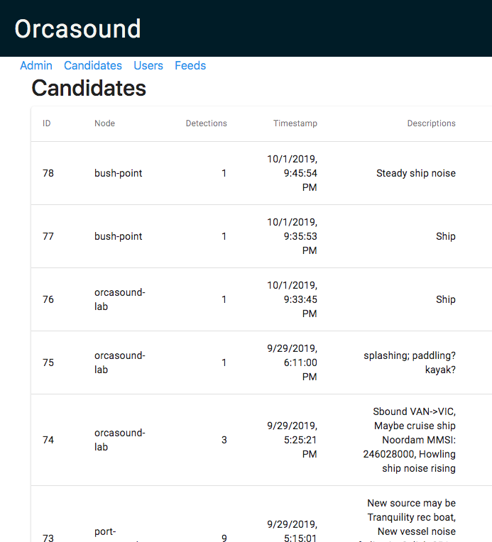
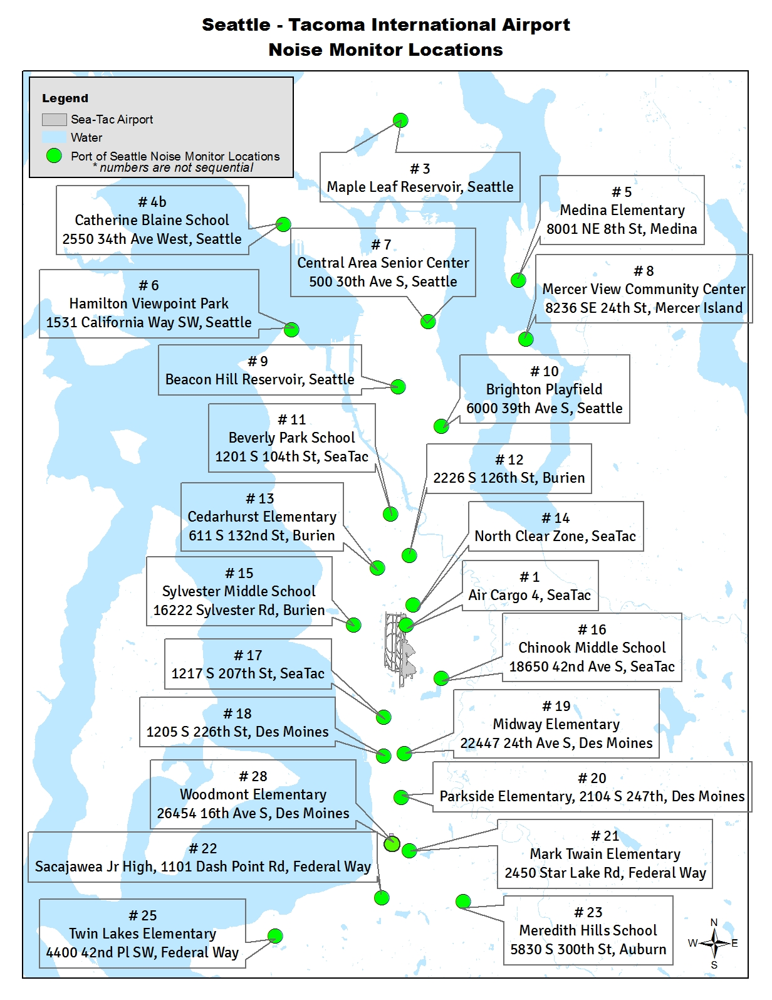

WA Waters - existing hydrophone network

Scott Veirs, Orcasound hydrophone network
Ship noise workshop on Oct 3, 2019, in Seattle
Orcasound funding history and future
From NOAA/WDFW contracts/grants to crowd-funding, philanthropy, and hackathons

Orcasound 2019-2020 map and membership
Cooperative of researchers, educators, & citizen scientists
Physical exhibits include: Seattle Aquarium; Port Townsend Marine Science Center; Langley Whale Center; Lime Kiln Visitor's Center (via FOLKS) |

|
You can join Orcasound, too! Just e-sign the MOA and heed the Creative Commons BY-NC-SA license.
Orcasound hardware evolution
A listening node for less than $1000 (U.S.)!
|
Basic ingredients (and costs):
60% of cost is hydrophones! (>75-95% for research nodes) |


|
Orcasound software evolution
2017 challenge: Can we make it easy to listen, cloud-based, & scalable?
Free open-source software to stream audio that "just works" on all devices/browsers

- Linux, Docker
- ffmpeg -- encodes audio data in two formats:
- Compressed & lossy: HLS segments (HTTP Live Streaming)
- Compressed, lossless: FLAC (Free Lossless Audio Codec)
Amazon S3 for archiving data in the cloud
- s3fs -- uploads data files and "manifest" to Simple Storage Services (S3)
- FLAC filenames contain UTC timestamp
What's next for Orcasound?
Make “listening for whales” interactive and inform real-time end-users
For free live-listening, browse to: live.orcasound.net
 |
 |  |
Orcasound 1.0 player published Nov. 1, 2018. Orcasound 2.0 is in beta-testing & will launch in fall, 2019.
Orcasound for characterizing vessel noise
The bad news: Vessel noise can mask both calls & clicks

Frequencies of vessel noise overlap
|

Squeaky ship: |
Vessel noise mitigation
The good news: there are many ways to "more than mitigate" vessel noise.
 |
 |
Operational (temporary) and technological (permanent) options (see Williams+2019)
Broadband received level peaks
Ships and boats have similar maxima, but ships last longer

Validating noise peaks & speed with AIS, cameras, and radar
Slow boats have lower maxima, but usually last longer than fast boats...

Images from the U.Vic./NEMES automated camera at Orcasound Lab. Smooth curve (black) is 1200-second running average broadband dB level. Now also tracking boat type & speed with M2 AIS/radar/camera system./p>
Monitoring ship noise in SRKW habitat
Urban ambient noise level: a baseline for "delta" noise metrics
Maximum received noise level vs duration
 From ASA 2019 talk by V.Veirs with ref. to Holt et al., 2017, "Noise levels received by endangered killer whales..." From ASA 2019 talk by V.Veirs with ref. to Holt et al., 2017, "Noise levels received by endangered killer whales..."
|
Monitoring aircraft noise in Seattle  |
Orcasound: as a partner in tracking SRKWs
Together we can detect & protect SRKW (with cool tech, like... Localization)
|
|
Mother-calf conversation! |
 |
|
| SRKWs "speak up" in noise from nearby boats (Holt, Noren, Veirs, Emmons & Veirs, 2009) |
2008: ASA talk by V.Veirs |
Zones of bioacoustic impact from noise
|

|
Potential impacts of noise on southern resident killer whales (SRKWs)
|
 Right whale stress fell after 9/11 decreased ship noise in 2001 (Rolland et al., 2012)
Right whale stress fell after 9/11 decreased ship noise in 2001 (Rolland et al., 2012)
|
/